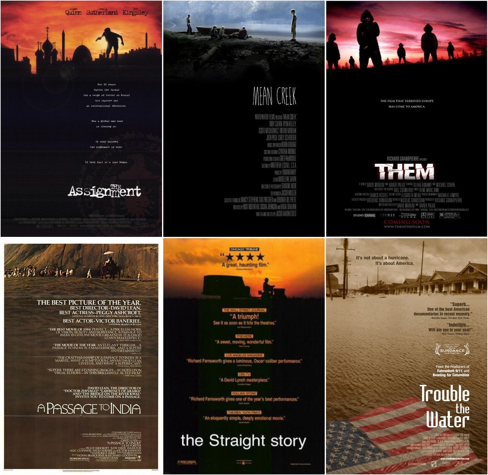
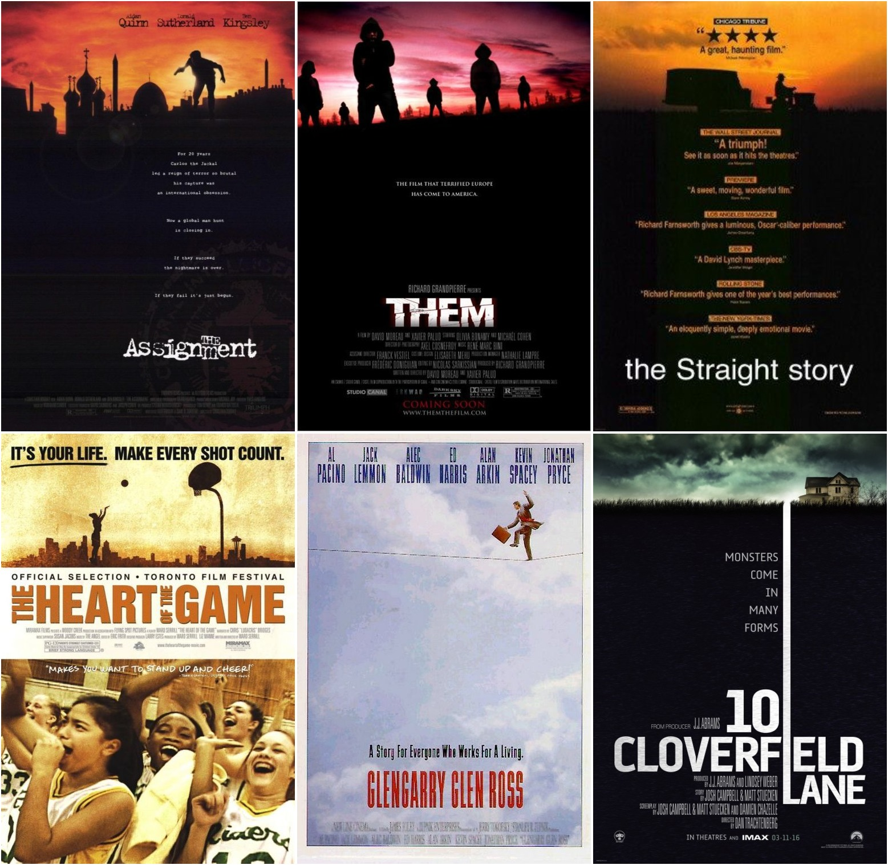

finding similar movie posters with ConvNet (deep-learning)
Introduction
Movie posters often exhibit strange and obvious similarities. Christophe Courtois has an awesome blog discussing this particularity of Hollywood posters.
Due to this observation, I wondered if the powerful ConvNets, algorithms used for image recognition, would be able to cluster similar movie posters. ConvNets (Convolutional Neural Networks) already show impressive results on object detection and have been applied to funny applications such as judging the quality of your selfies.
TL;DR: Using ConvNets to cluster similar movie posters. Results are given either with a subsampling of the datasets (similar movie poster cloud) or with a similar movie posters search engine.
Datasets
IMP Awards offers a large selection of posters that could easily be dowloaded with python script. I was able to retrieve 38,916 posters from a catalog of 17,426 unique movies (popular movies have multiple posters).
| Years | Number of Movies | Pourcentage |
|---|---|---|
| 1920-1979 | 7187 | ~18% |
| 1980-1999 | 6649 | ~17% |
| 2000-2017 | 25080 | ~64% |
Years of the movies (mostly recent ones)
ConvNet as feature extractor
Let's go back to ConvNet. To summaries ConvNets are a succession of convolutional layers followed by a simple classifier. Training the ConvNets for a specific task is time/resources consuming as it requires high-end GPUs that will compute for weeks trying to recognize objects with the help of a huge annotated database. I will not go more into details as ConvNet, and deep-learning in general, have an extensive literature. If you want to know more about them I refer you to this blog post or the really good Stanford CS231n notes.
Due to the difficulty of training his own ConvNet, one often uses an already trained/released ConvNet by experts. Then you can "fine-tune" the several parameters of the ConvNet with your own database or simply consider the already trained ConvNet as a fixed feature extrator (it is called transfer learning).
The the last option was used in order to find similar movie posters. More precisely, the VGG-19 pre-trained ConvNet, from which the classifier layers have been removed, allows to convert the image of a movie poster into a feature vector.

VGG-16 architecture (really similar to VGG-19 that only has 3 more convolutional layers) source
After removing the classifier layers (the 2 fully-connected and the softmax layers), propagating an image into the several convolution layers will end up with a tensor of size 7x7x512 that is vectorizable into a vector of size 25088. It means that the ConvNet allows us to convert a movie posters into a vector of size 25088. In other words, we can use a ConvNet as a features extractor.
Distance between movie posters
Now that we have a vector for each movie posters it is possible to compute the distance between each movie posters.
Multiple distances exist to compare two vectors. The most well-known is the euclidean distance however after few tests it appears that this distance favors a lot simple posters (mostly mono color with few object such as this one).
Another distance (similarity to be more precise) called cosine similarity quite popular for computing distance between feature vectors show significantly better results and have been chosen.
{kind=link}
First trying to compute the distance with the full 25088 sized vectors exhibits unsatisfying results and I have the feeling that we are in front of the curse of dimensionality phenomena. Reducing the feature space is necessary and a simple PCA with 500 components seems reasonably well suited.
Influence of the number of PCA components
I'll try to exhibit what do I called ''reasonably well suited''.
5 most similar movie posters of Fright Night Part II (30 components):
5 most similar movie posters of Fright Night Part II (500 components):
5 most similar movie posters of Fright Night Part II (5000 components):
The above concatenations of the 5th closest movie posters for Fright Night Part II exhibit the limitation of choosing a too strong PCA reduction. I have the feeling that the main characteristic of Fright Night Part II is the clearly visible eyes with an almost not visible face. Both a reduction of 500 or 5000 tend to catch this, with a small advantage for the 5000 in my opinion.
Similar movie posters for The Assignment (30 components):
Similar movie posters for The Assignment (500 components):

Similar movie posters for The Assignment (5000 components):

Here The Assignment poster is mostly black with a sunset and some black shadows. It seems that the reduction to 30 components only catches the darkish theme of the poster. In the other hand, the reduction to 5000 focuses too much on the shade of the shadow this is why GlenGarry Glen Gloss or The Heart of the Game (which is not so close to The Assignment poster in my opinion).
Similar movie posters for Running with Scissors (500 components):
Similar movie posters for Running with Scissors (500 components):
Similar movie posters for Running with Scissors (5000 components)
In case where the posters are ''simple'' a lack of reduction seems to made the similarity focus on a specific details. Clearly, the ConvNet have definitely recognize the hand of the Running with Scissors' poster and this feature has a huge impact. Here the algorithm seemed focused on this closed hand and try no matter what the general colors of the poster to match Running with Scissors with posters with hands in it.
In conclusion, dimension reduction on features from ConvNet acts as a low-pass filter, the more the reduction is the more the similarities are made upon global shapes and colors, whereas the less reduction is the more the similarity is influence by specific details.
Finding the perfect dimension reduction is no easy as it would require an annotated database which, in my knowledge, does not exist in this case.
Visualization
A good way to visualize that effectiveness of the ConvNet as feature extractor for movie posters is to reduce the dimension of the vectors up to 2. It will allow us to plot the different poster into a 2D and check if we can observe cluster of ''similar'' posters. Directly reducing the dimension to 2 with PCA wasn't conclusive. However the t-SNE which I quote wikipedia:
(...) is a nonlinear dimensionality reduction technique that is particularly well-suited for embedding high-dimensional data into a space of two or three dimensions, which can then be visualized in a scatter plot. Specifically, it models each high-dimensional object by a two- or three-dimensional point in such a way that similar objects are modeled by nearby points and dissimilar objects are modeled by distant points.
Randomly picked 2000 posters from the datasets and you get this visualization of similar movie posters.
Some cherry-piking results
Similar movie posters for Truman (2015):
Similar movie posters for Looking for Kitty (2004):
Similar movie posters for The Founders (2016):
Similar movie posters for Rock'n'Roll High School (1979):**
Similar movie posters for Underworld: Evolution (2006):
Similar movie posters for The Curious Case of Benjamin Button (2008):**
Code & Conclusion
It was fun playing with ConvNet and as a 'deep-learning noob' I am surprised how open-source tools make deep-learning approaches easy to implement.
The neural network API written in Python called Keras was naturally used for this project.
The code of the project is available on https://github.com/aDrz/movie-posters-convnet. It consists of a poster scraper, features extractor, similarity computation that is feed to a database. Flask is then used as a back-end API.
Overall, the results are sometimes surprisingly good. Obviously if you dig into the search engine you'll find some stupid and random associations, it might be because the dataset is not big enough or simply that the algorithm failed. Using cosine distance as a similarity measurement is straight forward and might not be the best solution. It would be interesting to similarity learning can bring to this project.